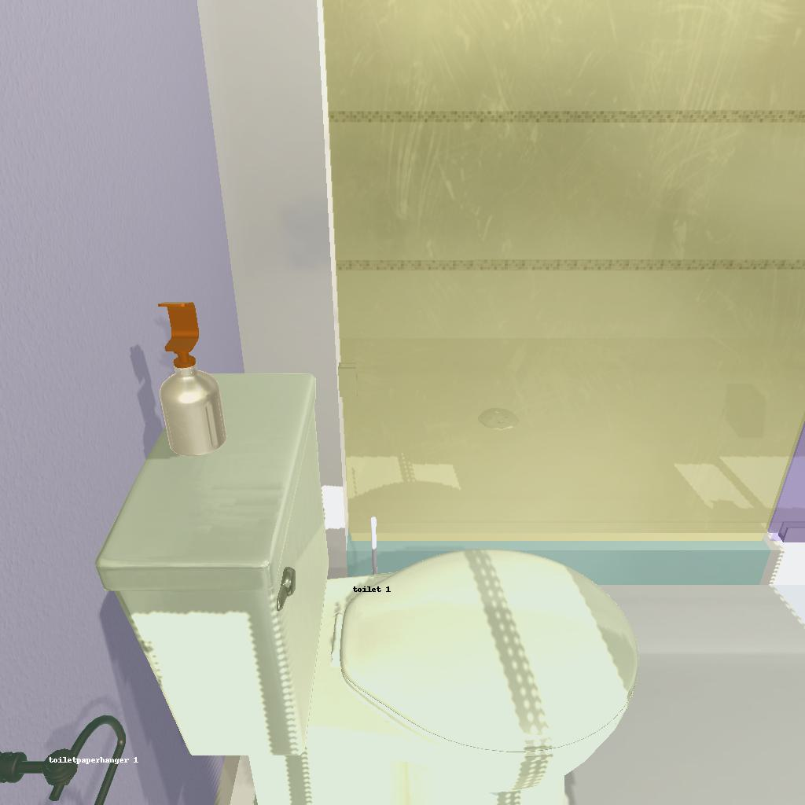

---------------------------------------------------------task: 28---------------------------------------------------------
--------------------------------------------------------------------------------------------------------------------------------------------------------------------
--------------------------------------------------------------------------------------------------------------------------------------------------------------------
Step:--------------------------------------------------------------------------0-------------------------------------------------------------------------------
----------------------------------------
VLM Prompt:
Image1:
**Instruction**
1. Analyze the provided image to identify all visible household objects, focusing on those relevant to the task description "put two spraybottle in toilet."
2. Use the analysis of the image and the task hint "The agent must find an object of the desired type, pick it up, find the correct location to place it, put it down there, then look for another object of the desired type, pick it up, return to previous location, and put it down there with the other object." to answer the question: what is the most reasonable action in the choices for the task description "put two spraybottle in toilet"?
4. Decide and write the answer using the template: The answer is: (i): , where i is the real number. If there is no desired object in the image, search every place based on **Initial Observation** to find the object. And if no one is exactly correct, choose a similar answer.
**Initial Observation**
You are in the middle of a room. Looking quickly around you, you can see bathtub (1), bathtubbasin (1), cart (1), sink (1), garbagecan (1), sinkbasin (1), countertop (1), drawer (1-4), toilet (1), toiletpaperhanger (1)
**Answer Choices**
(1): go to bathtub 1
(2): go to bathtubbasin 1
(3): go to cart 1
(4): go to sink 1
(5): go to garbagecan 1
(6): go to sinkbasin 1
(7): go to countertop 1
(8): go to drawer 1
(9): go to drawer 2
(10): go to drawer 3
(11): go to drawer 4
(12): go to toilet 1
(13): go to toiletpaperhanger 1
**Answer**
Let's think step by step by following the instructions.
----------------------------------------
----------------------------------------
Original Response:
First, we need to identify any visible household objects in the image that are relevant to the task "put two spraybottle in toilet." In the image, we can see a toiletpaperhanger 1 and a toilet 1. However, there are no spray bottles visible in the image.
Based on the initial observation, we know that there are other objects and locations in the room, such as a bathtub, sink, garbage can, countertop, and drawers, which could potentially have the spray bottles we need for the task.
Given the task hint, the agent must find an object of the desired type (spray bottle), pick it up, find the correct location to place it (toilet 1), put it down there, then look for another object of the desired type, pick it up, return to the previous location, and put it down there with the other object.
Since no desired object is visible in the image, we should search every place based on the initial observation to find the object. The most common places to store spray bottles in a bathroom setting would be under the sink (in drawers or cabinets) or on a countertop or cart if they are used frequently.
The answer is: (10): go to drawer 3, as drawers are a likely place to find household objects such as spray bottles, and starting with drawer 3 is arbitrary as any drawer could potentially contain the item. If drawer 3 doesn't contain the spray bottle, the agent can then proceed to check the other drawers or locations listed in the initial observation.
----------------------------------------
----------------------------------------
>>> Refine Original VLM Response and Get Pure Action: go to drawer 3, as drawers are a likely place to find household objects such as spray bottles, and starting with drawer 3 is arbitrary as any drawer could potentially contain the item
----------------------------------------
-----------------------------------------------------------------
Running time: 11.243804931640625 seconds
Total Money: 17.895850000000003
-----------------------------------------------------------------
-----------------------------------------------------------------
Text Observation:Nothing happens.
-----------------------------------------------------------------
UNSUCCEED